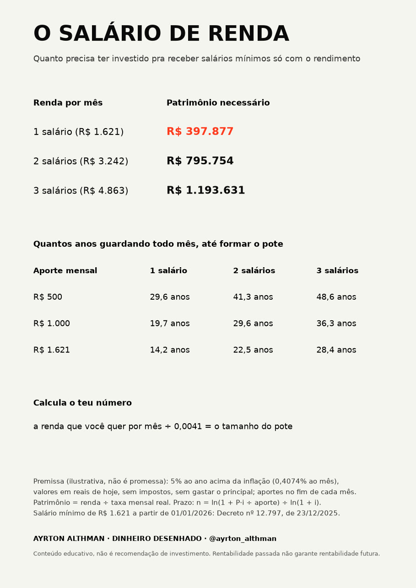

Dinheiro desenhado · EP 24
O salário de renda
Quanto precisa ter investido pra receber salários mínimos só com o rendimento, sem gastar o principal.
Baixar a tabela em PDFPatrimônio necessário
1 salário (R$ 1.621)R$ 397.877
2 salários (R$ 3.242)R$ 795.754
3 salários (R$ 4.863)R$ 1.193.631
Quantos anos guardando todo mês
| Aporte | 1 salário | 2 salários | 3 salários |
|---|---|---|---|
| R$ 500 | 29,6 anos | 41,3 anos | 48,6 anos |
| R$ 1.000 | 19,7 anos | 29,6 anos | 36,3 anos |
| R$ 1.621 | 14,2 anos | 22,5 anos | 28,4 anos |
Calcula o teu número
a renda que você quer por mês ÷ 0,0041 = o tamanho do pote
Exemplo: R$ 2.500 por mês ÷ 0,0041 ≈ R$ 610 mil.

Premissa ilustrativa, não é promessa: 5% ao ano acima da inflação (0,4074% ao mês), reais de hoje, sem impostos, aportes no fim de cada mês. Salário mínimo de R$ 1.621 a partir de 01/01/2026 (Decreto nº 12.797/2025).
Episódio novo de seg, qua e sex no @ayrton_althman. Conteúdo educativo, não é recomendação de investimento. Rentabilidade passada não garante rentabilidade futura.